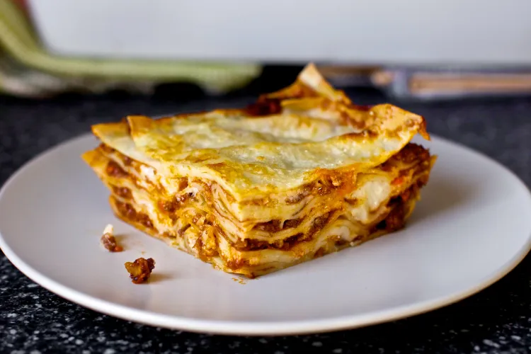

Lasagna Bolognese

From Deb @ Smitten Kitchen: This, this is my culinary Mount Everest. This twenty-layer striation of noodles,
ragu, béchamel and cheese, repeated four times and then some took me more than
five years to conquer. To be honest, six years ago I didn’t know what it was.
Sure, I had heard of lasagna but I wasn’t terribly fond of it because I don’t
much care for the texture of ricotta once it has baked. (Ricotta, I’d argue, is
best rich, fresh, and cold on toast.) But I was galloping through a post on an
Italian food blog and I stumbled upon a parenthesised side-thought that stopped
me dead in my tracks. It said something along the lines of “I don’t know whose
idea it was to put ricotta in lasagna but… shudder.” And I thought, but wait!
What’s supposed to go in lasagna? But there was no answer, so I set out to find
one.
Ingredients
Bolognese Sauce
- 1 medium onion, coarsely chopped (1-inch pieces are fine)
- 1 large or 2 slim carrots, coarsely chopped
- 2 ribs celery, coarsely chopped
- 3 cloves garlic, coarsely chopped
- 2 to 3 tablespoons olive oil
- Kosher salt
- Freshly ground black pepper
- 2 pounds ground chuck, brisket or round or combination
- 1 1/4 cups tomato paste (from 2 6-ounce cans)
- 2 cups red wine, preferably hearty but really, anything you like to drink
- Water as needed
- 2 bay leaves
- A few sprigs thyme, tied in a bundle
Pasta
- 1 1/2 cups all-purpose flour
- 2 large eggs
- 1/2 teaspoon table salt
- 1 to 2 tablespoons water, if needed
Béchamel sauce
- 1/2 cup (8 tablespoons) unsalted butter
- 1/2 cup all-purpose flour
- 4 cups whole milk
- 1 teaspoon table salt
- 1 clove minced garlic
- Freshly grated nutmeg, to taste
- Freshly ground black pepper
Steps
Day 1
- In a food processor, pulse onion, carrots, celery, and garlic until finely chopped.
- Heat a moderate-sized Dutch oven (4 to 5 quarts) over medium-high heat.
Once hot, coat the bottom of the pan with two to three tablespoons of oil.
- Once it is hot, add the chopped vegetables and season them generously with
salt and pepper. Cook the vegetables until they are evenly brown, stirring frequently,
about 15 minutes.
- Add the ground beef and seasoning again with salt and pepper. Brown the beef well
and again, don’t rush this step. Cook for another 15 minutes.
- Add the tomato paste and cook for 3 to 4 minutes.
- Add the red wine, using it to scrape up any stuck bits in the pan. Cook the wine
until it has reduced by half, about 5 more minutes.
- Add water to the pan until the water is about 1 inch above the meat. Toss in the
bay leaves and the bundle of thyme and stir to combine everything, bringing it to
a low simmer.
- Here’s how the next 3 to 4 hours will go: You’ll keep a pitcher of water near the
stove. You’ll stir the sauce from time to time. As the water in the sauce cooks off,
you’ll want to add more but you don’t want to add more than 1 to 2 cups at a time or
you’ll have boiled meat sauce (bleh) rather than something thick and robust with flavor.
Taste it from time to time and add more seasoning if needed. Simmer for 3 to 4 hours.
Day 2
- Make your pasta: Combine all of the pasta ingredients in a food processor.
Run the machine until the mixture begins to form a ball. You’re looking for
a dough that is firm but not sticky. If needed, add water a drop at a time
until it comes together. Place ball of dough on a lightly floured surface
and invert a bowl over it. Let it rest for an hour. (You’ll have about 10
ounces or a little less than 2/3 pound of fresh pasta dough.)
- Get your work area ready; I like to line a large tray with waxed paper. Dust
the waxed paper with flour. Keep more waxed paper and flour nearby.
- Working with a quarter of the dough at a time, run in through your pasta roller
on the widest setting (usually “0”), then repeat this process with the roller set
increasingly smaller (1, 2, 3) until the pasta is very thin. My Atlas machine goes
to 9 but I almost always stop at 8 because this setting makes for thin, delicate
pasta that’s not so fragile that I’m pulling my hair out with frustration trying
to move it around.
- If you find your dough sticking, lightly flour it. If it gets too big to handle,
cut it in half. If the piece gets too wide for the machine or becomes annoyingly
irregularly shaped, I re-“fold” the dough by folding the sides of the dough into the
middle, like an envelope, and press it flat. Then, run the piece back through the
machine with the open sides up and down on the widest setting again (0) working your
way thinner. This allows the machine to “press” any trapped air out.
- Lay your pasta on the floured waxed paper in a single layer, trying to keep the pieces
from touching. Flour the tops of them and place another sheet of floured wax paper on
top. Repeat this process with the remaining dough and as many layers of pasta you need.
- Next, cook your pasta: Cut your pasta lengths into square-
ish shapes. The fun thing about making fresh pasta for lasagna is that the
shape doesn’t much matter; you’re going to tile together whatever you have
and nobody will care if it took 9 or 16 bits to patch the layer together.
Bring a large pot of water to boil. Have ready a skimmer, a large bowl of
ice water and a large tray or platter that you’ve drizzled or spritzed with
oil. Boil several of squares of noodle at a time for 1 to 2 minutes each (1
minute if you, indeed, went to the thinnest setting on your machine; 2 if you,
like me, stopped one shy of thinnest). Scoop them out with your skimmer, swish
them in the ice water and lay them out (still wet is fine) on the oiled platter.
Repeat with remaining pasta. It’s okay to have your noodles touch; they shouldn’t
stick together in the short period of time until you begin assembling but if you’re
nervous, you can drizzle or spritz each layer very lightly with more oil.
- Make your béchamel: Melt your butter in the bottom of a medium-to-large saucepan
over medium heat. Once melted, add your flour and stir it into the butter until smooth.
Cook the mixture together for a minute, stirring constantly. Pour in a small drizzle
of your milk*, whisking constantly into the butter-flour mixture until smooth.
Continue to drizzle a very small amount at a time, whisking constantly. Once you’ve
added a little over half of your milk, you’ll find that you have more of a thick sauce
or batter, and you can start adding the milk in larger splashes, being sure to keep
mixing. Once all of the milk is added, add the salt, garlic, nutmeg (if using) and few
grinds of black pepper, and bring the mixture to a lower simmer and cook it, stirring
frequently, for 10 minutes. Taste and adjust seasonings if needed.
- At last, you may assemble your dish: Preheat oven to 400 degrees. In a 9×13-inch or
equivalent rectangular baking dish, spread a generous 1/4 cup of the béchamel. I mostly
use this to keep the noodles from sticking. Add your first layer of cooked noodles,
patching and slightly overlapping them however is needed to form a single layer. Ladle
1 cup bolognese sauce over the noodles, spreading it evenly. Drizzle 1/2 cup béchamel
over the bolognese; don’t worry about getting it perfectly smooth or even. Sprinkle the
layer with 1/3 cup parmesan cheese. Repeat this process — pasta + 1 cup bolognese + 1/2
cup béchamel + 1/3 cup parmesan — three more times, then add one more layer of pasta.
You’ll use 5 layers of pasta total.
There are two ways to finish the dish. You can simply sprinkle the top layer of pasta
with your remaining parmesan before baking. This makes the crunchiest lid. I like a
semi-crunchy lid and first spread 1/4 cup béchamel over the top layer of pasta before
sprinkling it with the remaining cheese. It still gets crunchy — and has corners that
are worth fighting over — but never unpleasantly so.
- Bake your lasagna for 30 to 45 minutes, until bubbly all over and browned on top. You
should do absolutely nothing but put your feet up and drink a glass of wine while you
do; you’ve earned it. When it comes out of the oven, I like to let it rest for 10 minutes
before serving it.